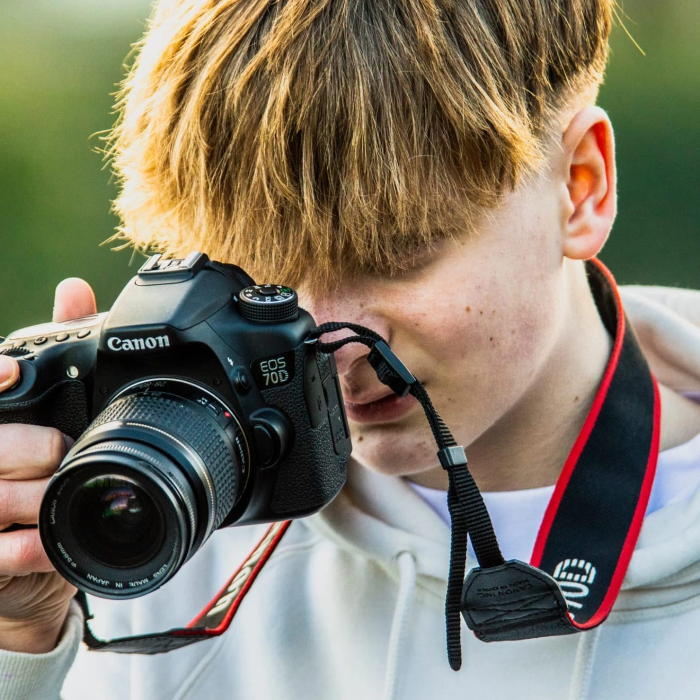
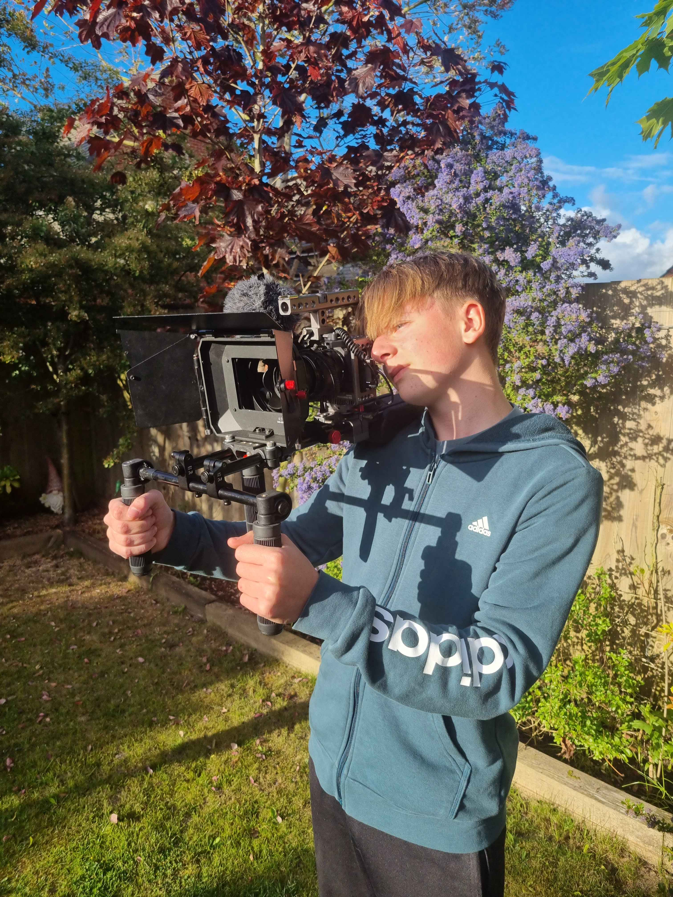

I'm aiming to focus my work on photography, videography and in the very near future more drone work. I always look to make my work as best quality as I can as it shows dedication and pride in what I do. I have always found pictures to be an amazing way to express yourself and style while capturing the beauty of life.
I originally started taking pictures when I was 12 on an old DSLR and found a true love for the hobby. I recently upgraded some of my gear and I am still on that journey. There are many things I have learnt on this adventure so far, one thing is that your camera gear is irrelevant*, I started using an old Nikon D3100 which is a 16 year old camera and I have taken some of my best pictures on it, proving camera gear isn't everything. You just have to work with what you have, be creative and just go out and search for the perfect image. Thanks for reading!
Email - jamiepricephotography1@gmail.com

